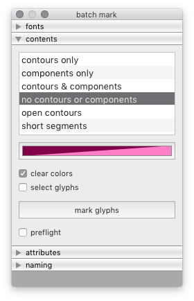
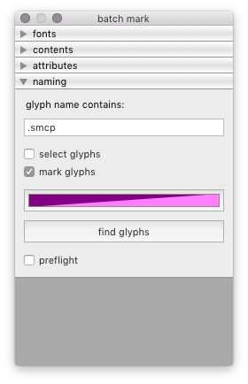

mark¶
The Mark tool is a batch tool to apply mark colors to a set of target fonts based on different types of search patterns.
 fonts
Use the fonts panel to select the source font and the target fonts.
contents
Use the contents panel to choose one type of glyph contents to find and apply mark colors to in the target fonts.
naming
Use the naming panel to apply mark colors in the target fonts based on the search results in glyph names for a given string.
-
class
BatchMarkGlyphsDialog[source]¶ Bases:
hTools3.dialogs.batch.base.BatchDialogBaseA dialog to apply mark colors and sort target fonts based on different types of search patterns.
from hTools3.dialogs.batch.mark import BatchMarkGlyphsDialog BatchMarkGlyphsDialog()
-
title= 'batch mark'¶
-
key= 'com.hipertipo.hTools3.dialogs.batch.mark'¶
-
settings= {'color': (1, 0.5, 0, 0.5), 'shortSegment': 10}¶
-
options= ['contours only', 'components only', 'contours & components', 'no contours or components', 'open contours', 'short segments']¶
-
sorting= {'width': 'width', 'left margin': 'leftMargin', 'right margin': 'rightMargin'}¶
-
selectedGlyphFilter¶ Selected glyph contents option.
-
selectedGlyphSorting¶ Selected glyph sorting option.
-